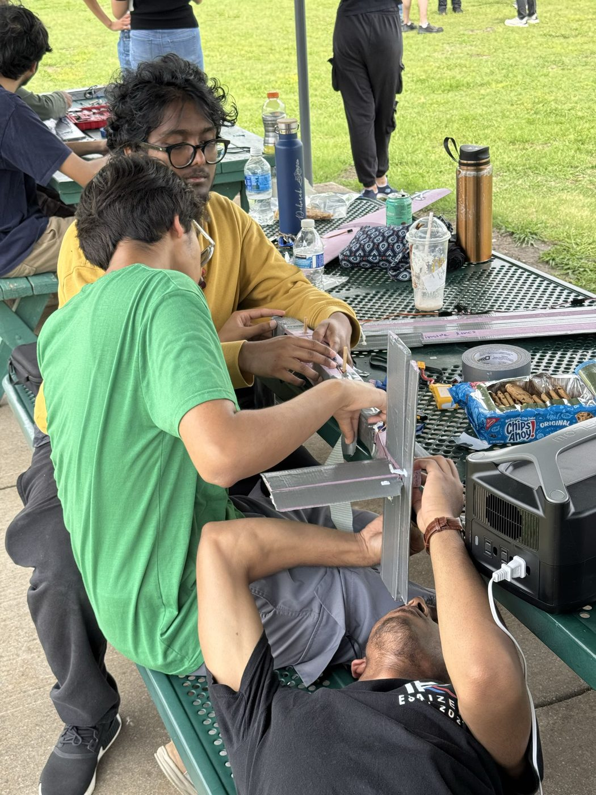

From Foam to Flight
The Aviation Design Competition (ADC) was AIAA UTD's onboarding program for new members, run by two former Design/Build/Fly members as a pipeline into DBF. Every team received the same set of electronics and one goal: build the plane that could fly the fastest loop, with the entire aircraft fitting inside a 1 m × 1 m × 1 m box. About seven teams competed.
Our three-person team went with a conventional layout, with a standard wing and tail and nothing unusual in the planform. Since every team flew the same electronics, the contest came down to the airframe. Before building anything, we used XFLR5 to select our airfoil, size the tail, and check the aircraft's stability. I worked on the CAD in SolidWorks and on manufacturing, and the airframe was cut from pink XPS foam.
The biggest problem I faced during manufacturing was the wing. With only foam it was crazy flexible. It bent visibly under load, and a wing that deflects in flight changes shape at exactly the moment it needs to hold steady. I took on the challenge of reinforcing it. I sandwiched basswood spars into the wing along its full span, interlayered with the foam. This greatly increased the wing's bending stiffness: basswood is far stiffer than XPS foam, so the spars carried most of the bending load and the wing deflected much less under the same load. I then covered the entire wing in duct tape. The tape gave it a smooth, continuous outer skin, added torsional rigidity, increased the bond between the basswood and foam, and made the surface tough enough to absorb impacts.
I thought at first it was overkill, but it seems I was mistaken. Our first three flight attempts ended in crashes, but the wing came through all three fully intact. Without that, we would have spent our remaining time rebuilding instead of flying.
Here's a photo of us working on the plane at the field.

The flight that finally stayed in the air came on the last day we were able to fly, so there was no chance to adjust anything afterward. The plane had to work exactly as built, and it did. Our pilot said it flew very well, and we posted the third-fastest loop time of the roughly seven teams, earning 3rd place.
ADC was my first experience taking an aircraft from analysis through the build to the flying field, and I am very proud of how it turned out. It also did what it was designed to do. The organizers told me I'd be a strong addition to Design/Build/Fly, and I joined the DBF team in May 2025.
Here is a video of the maiden flight taken by my teammate Talha.